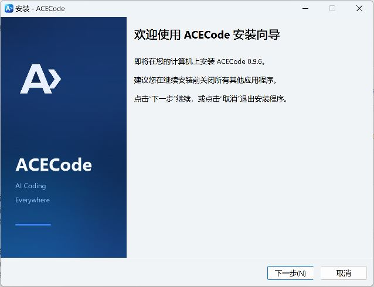
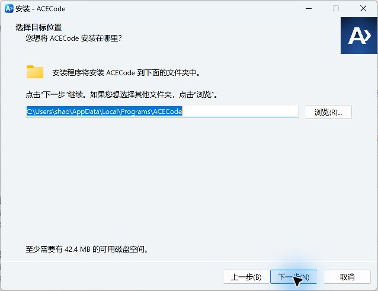

安装
选择适合系统和处理器的安装方式，确认程序能启动后，再配置第一个模型。
安装前准备
先确定你使用的操作系统和处理器架构。Windows、macOS 和 Linux 的安装包不能混用；Apple 芯片与 Intel Mac 也需要选择不同的包。
- 模型访问方式：准备服务商提供的 API Key，或使用支持的账号登录方式。安装完成后再配置即可。
- 开发环境：若任务需要运行项目，请先准备项目依赖，例如 Git、Node.js、Python 或相应编译工具。
- npm 安装：需要电脑上已有 Node.js 和 npm。直接下载原生安装包时，不需要为了启动 ACECode 安装 Node.js。
所有手动下载入口都指向 ACECode 官方发布页 。在 Assets 中选择对应平台的产物，具体可用文件以该版本发布内容为准。
通过 npm 安装
如果你已经使用 npm，可以直接安装桌面端或终端版。安装时会按系统和处理器选择对应的原生程序。
桌面端
npm install -g @aceagent/desktop
acecode-desktop终端版
npm install -g @aceagent/acecode
acecode configure
acecode终端版与桌面端分别提供 acecode 与 acecode-desktop 命令。安装后重新打开终端，用 acecode --version 检查终端版是否可用。
Windows
桌面端可使用 Windows x64 安装器，也可以使用上方的 npm 方式。
- 打开官方发布页，找到该版本提供的 Windows 安装器，例如
ACECode-<版本>-windows-x64-setup.exe。 - 双击安装器，按向导完成安装。默认安装到当前用户的
%LOCALAPPDATA%\Programs\ACECode。 - 从开始菜单启动 ACECode，然后前往配置第一个模型。
{kind=link}

{kind=link}

Windows 桌面界面需要 Microsoft Edge WebView2 Runtime。若当前系统没有该运行时，请按安装提示补齐。使用便携包时，请保留解压后的完整目录，桌面程序需要同目录中的后台程序和资源文件。
macOS
先在苹果菜单的“关于本机”中确认芯片类型，再选择对应的安装包。
| 你的 Mac | 选择的架构 |
|---|---|
| Apple 芯片（M 系列） | macos-arm64 |
| Intel 处理器 | macos-x64 |
- 若当前发布版本提供
.pkg，下载与架构匹配的包并双击打开。 - 按照系统安装器提示完成当前用户安装。
- 在
~/Applications/ACECode.app打开 ACECode，继续配置模型。
若该版本没有 PKG，可使用 npm，或按发行说明使用对应架构的压缩包。ACECode 的 macOS 发布产物不使用 DMG 安装流程。
Linux
Linux 可以使用 npm 安装，也可以下载 acecode-linux-x64.tar.gz 或 acecode-linux-arm64.tar.gz。下面以 x64 压缩包为例，在下载目录执行：
tar -xzf acecode-linux-x64.tar.gz
cd acecode-linux-x64
./acecode configure
./acecodeARM64 用户替换文件名和目录名中的 x64 为 arm64。直接解压运行时使用 ./acecode；将程序目录加入 PATH 后，才可在其他目录使用 acecode。
使用 Linux 桌面端
桌面端需要 WebKitGTK 4.1。采用 apt 的发行版可安装对应运行库，然后在程序目录中启动：
sudo apt install libwebkit2gtk-4.1-0
./acecode-desktop其他发行版请使用对应的软件包管理器安装 WebKitGTK 4.1。较旧的 Linux 系统若出现 glibc 版本不满足的问题，请查看发布页中的 acecode-linux-old-* 兼容包。
通过浏览器使用
安装终端版后，也可以启动后台服务。npm 安装时执行：
acecode daemon未覆盖端口配置时，在本机浏览器打开 http://127.0.0.1:12399。便携版请在程序目录执行 ./acecode daemon。配置了端口或认证时，按服务启动信息访问。
请优先打开启动输出中的 Web UI: 地址；已保存的端口配置可能与默认值不同。完整操作见Web。